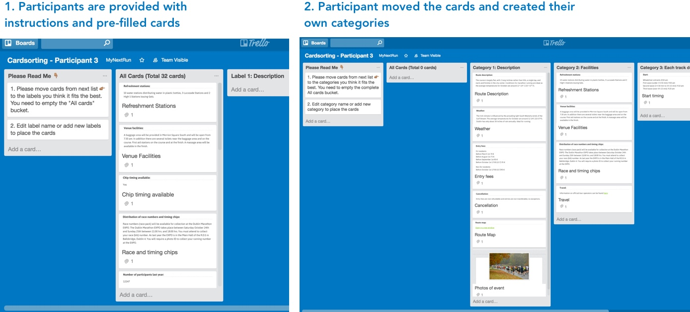

EXPLORE
PACT - people, interactionn, technology, strategy
Identifying and understanding your customers and business.
Capture a thorough understanding of your customers
Find out what people are doing with your services currently
Identify opportunities for a new product or service
DEFINE
customer, business, insight, objective
Creating a plan to design engaging, authentic experiences.
Outline a clear direction for all research and design activities going forward
Prioritise activities based on business goals
Ensure all stakeholders are aligned with key aims before moving into the design stage
IDEATE
hypothesis, design, evaluate, test
Designing solutions that exceed expectations.
Test hypothesis early and often
Gather feedback on multiple designs with representative users
Resolve conflicting design ideas amongst project stakeholders
TRANSFORM
implement, guide, support
We’re in this with you.
Turn ideas into reality
Share insights and road maps with the wider business
Record where you’ve come from and where you’re going
MY ETHOS
My UX process is data-driven and inclusive in terms of being , User experience design is about designing a coherent flow of user intention that facilitates the highest degree of satisfaction with least resistance to the process. The improvement of the performance of this flow is an iterative learning process based on data-driven from the user’s needs, user’s action, the tools where the action is performed and the context.

Figure 2: Understanding the Business (Tool: Google Slides)
I asked the team to participate in the activity and to get 5 users to be participant. I used trello for the card sorting sessions since I was based remotely. I created individual boards for each participant and sent them a link with all the instructions. by copying the first template board.
We found a natural pattern when matched all the participants. This was how the design was inspired.
To make the interaction fluid and interactive without having to change any backend data model, it was important that a lot of information are still in the same page. Also, this would make navigation easier without having to go out of the main context. Therefore, during the User Interface design a lot of emphasis was given on icons, images, colors to add visual cues in a subtle way for easy navigation.
For instance the page had the route map that opens a new window which according to the user research done before showed pop-ups are annoying and there is performance problem when you interact with a pop-up.
Figure 3: Understanding the Users (Tool: Trello to built Persona for at least one user from each customer segment )